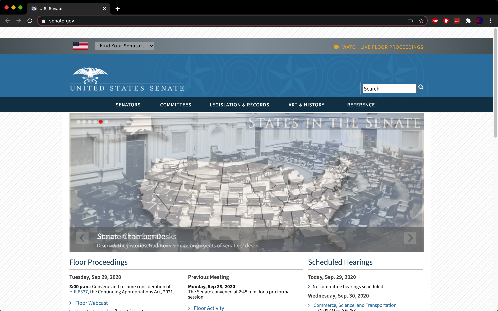
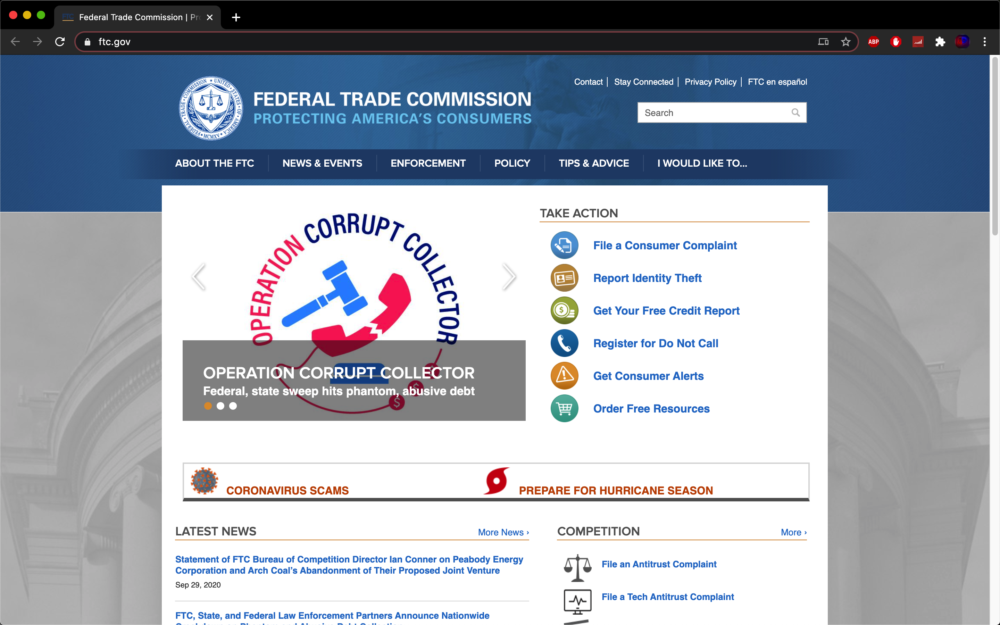
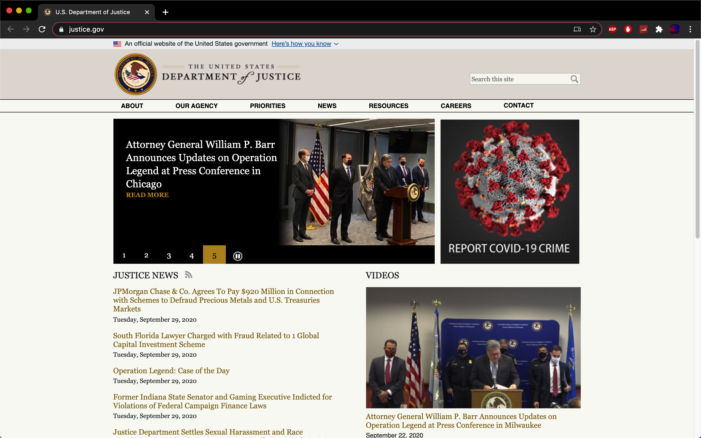

This website's goal is to provide information about the Senate, this role grows as technology improves.
This website's goal is to provide people with a platform to interact and learn more about the House of Representatives, it's purpose and the people that make up the House of Representatives.

This website's goal is to provide information about the White House. It contains information about the President, the Vice President, their families, press releases, proclamations, executive orders, and some speeches by White House officials.

This website's goal is to provide information about the SEC. The mission of the U.S. Securities and Exchange Commission is to protect investors, maintain fair, orderly, and efficient markets, and facilitate capital formation.
This website's goal is to provide information about the FTC. When the FTC was created in 1914, its purpose was to prevent unfair methods of competition in commerce as part of the battle to “bust the trusts.” Over the years, Congress passed additional laws giving the agency greater authority to police anticompetitive practices.
This website's goal is to provide information about the Department of Justice. The purpose of the Department of Justice is to enforce the law and defend the interests of the United States according to the law.
